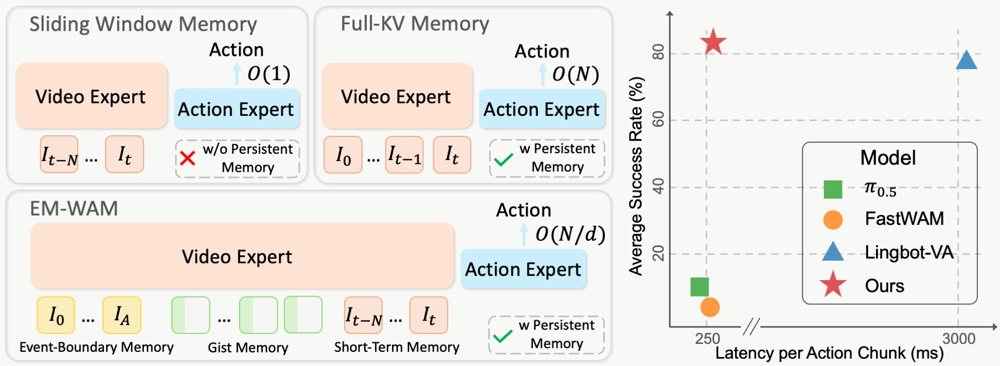
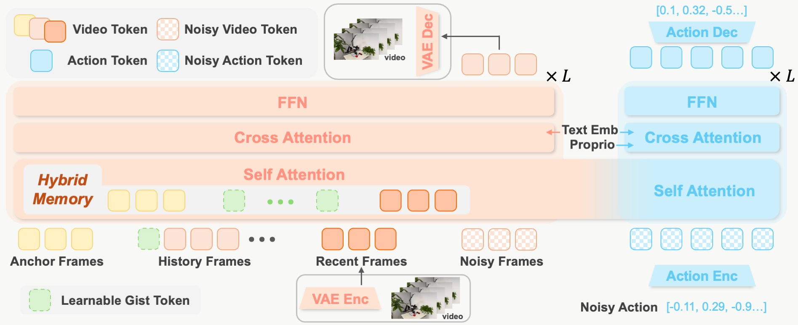
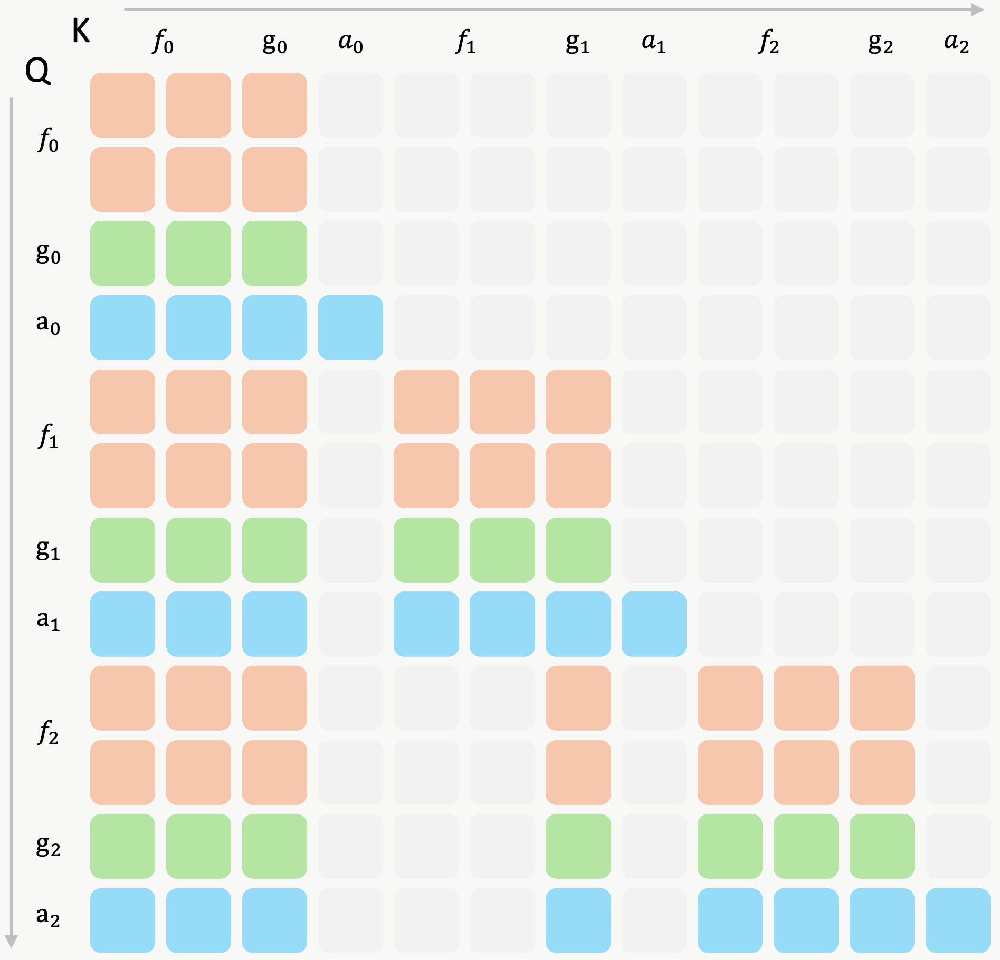
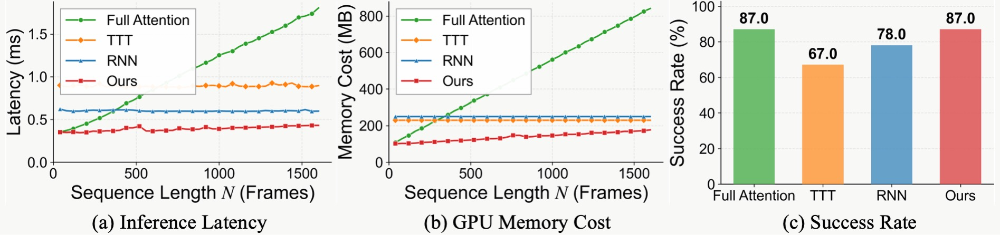

Model Architecture. Observations are first encoded into compact video latents by a causal video VAE. A video DiT processes visual dynamics and maintains a temporal KV cache, while an action DiT generates action chunks conditioned on the cached video representations. The two branches are organized in a mixture-of-transformers (MoT) architecture. During inference, the clean latent of the current observation is forwarded through the video DiT only once to update the KV cache; the action DiT then predicts the action chunk by denoising action tokens while attending to the cached video representations. Video generation is bypassed at inference time.
Hybrid Memory. Inspired by complementary forms of human memory, EM-WAM maintains a compact temporal cache comprising three components: (1) short-term memory—a sliding-window cache over the most recent frames, preserving high-fidelity local context for immediate closed-loop control; (2) event-boundary memory—a small set of anchor frames at task onset with full visual tokens, grounding key information in the instruction; and (3) gist memory—M learnable gist tokens per frame (M ≪ L, the number of visual tokens) that compress long-range history, reducing the KV cache by L/M× compared with full-history attention.

Attention mask of EM-WAM. Each frame's gist tokens attend to both the frame's visual tokens and its historical context, thereby distilling long-range information into a compact representation. For a video frame that is neither an anchor frame nor a recent frame, subsequent video and action tokens do not attend to it directly; instead, they attend to the corresponding gist tokens. During inference, EM-WAM evicts the KV cache of such frames while preserving the KV cache of their gist tokens, so that long-range history is retained as a compact persistent memory rather than as a costly full-token KV cache.
| Task | π0.5 | FastWAM | Lingbot-VA | EM-WAM (Ours) |
|---|---|---|---|---|
| Observe and Pick Up | 9% | 0% | 13% | 27% |
| Rearrange Blocks | 13% | 0% | 100% | 100% |
| Put Back Block | 11% | 0% | 100% | 100% |
| Swap Blocks | 24% | 0% | 99% | 100% |
| Swap T | 15% | 7% | 88% | 94% |
| Battery Try | 16% | 20% | 41% | 41% |
| Blocks Ranking Try | 6% | 26% | 100% | 100% |
| Cover Blocks | 0% | 0% | 79% | 98% |
| Press Button | 0% | 0% | 84% | 87% |
| Average | 10.4% | 5.9% | 78.2% | 83.0% |
We evaluate EM-WAM on RMBench, a simulation benchmark for long-horizon, memory-dependent robotic manipulation across nine dual-arm tasks. Baselines with bounded observation windows (π0.5, FastWAM) fail on most tasks, achieving only 10.4% and 5.9% average success. LingBot-VA, which retains the full historical KV cache, achieves strong performance at 78.2%. EM-WAM further improves by 4.8 percentage points to 83.0%, achieving leading results on every task — demonstrating that the proposed hybrid memory mechanism is both efficient and effective for robotic manipulation.

We compare EM-WAM's hybrid memory against full attention, TTT, and RNN-based mechanisms in terms of inference latency, GPU memory usage, and task performance. TTT and RNN maintain constant complexity but introduce overhead even for short trajectories. Full attention scales poorly with trajectory length. Hybrid memory achieves the same 87% success rate as full attention on the challenging Press Button task, while being substantially more efficient — even outperforming RNN- and TTT-based alternatives at 1,600 frames.
"Play the shell game."
"Look at the two numbers on the table. Press the left button as many times as the number on the left, and press the right button as many times as the number on the right. Then press the rear button once to confirm."
"Initially, there is one target object on the shelf and five random objects on the table. Then, a screen obscures the target object. Pick up the corresponding target object from the table and lift it up."
"Move the block between the two mats onto the empty mat, press the button, then move the other block (the one that started on a mat) to the space between the two mats."
"There are four mats, one block, and a button on the table. One block is on one of the mats. First, put the block to the center, then press the button. Then, put the block back in its original position."
"There are three traies on the table, and two blocks are placed in two different traies. You may move only one block at a time, and each tray can hold at most one block. Swap the positions of the two blocks. Finally press the button."
"Swap the poses of the two T-blocks, including both position and orientation."
"There are two batteries and a battery slot on the table. Combining the two batteries in different orientations causes the dashboard needle to rotate."
"There is a button and three colored cubes arranged in a random row on the table. Each time the cubes are rearranged, the arm presses the button until the arrangement is successful."
"On the table, red, green, and blue blocks are arranged randomly along with three lids. From the current viewpoint, cover the blocks from left to right using the lids, and then uncover them again in the sequence red, green, and blue."
"Observe the two numbers on the table. Press the left button the number of times corresponding to the number on the left, and press the middle button the number of times corresponding to the number on the right. Then press the right button once to confirm."
@article{yang2026emwam,
title={EM-WAM: Efficient World Action Modeling with Persistent Memory},
author={Yang, Sizhe and Mu, Juncheng and Wei, Tianming and Lu, Chenhao and Li, Xiaofan and Xu, Linning and Xue, Zhengrong and Yuan, Zhecheng and Lin, Dahua and Pang, Jiangmiao and Xu, Huazhe},
journal={arXiv preprint arXiv:XXXX.XXXXX},
year={2026}
}